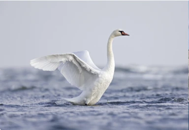

The Swan
The call of the whooper swan, Finland’s national bird, inspired the ridges on the medal. The sound is arranged in a circle to form a pattern you can feel.

The call of the whooper swan, Finland’s national bird, inspired the ridges on the medal. The sound is arranged in a circle to form a pattern you can feel.
